Lab 4 – Speech IVA
Objectives:
Add a speech IVA using Webex AI Agent to a flow.
Import and modify and existing Webex AI Agent
Experience a simple generative AI autonomous agent
Configure a flow diversion node to redirect calls between different paths.
Update flow variables and global variables for new options.
Learn how to pass context data in and retrieve context data out of an AI Agent
Prerequisites
Lab 3
Instructors turn on AI Features prior to this lab starting.
Generated Summaries and Real-time transcription
Instructions: Lab 4
Within Collaboration Control Hub à Contact Center 🡪 Overview page
On the right side under Quick Links, click on Webex AI Agent
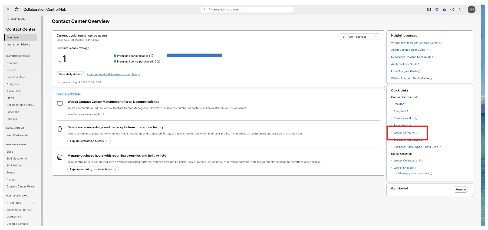
Click on “Import agent”
Import the “Wx1_HelloWorld” AI agent json file provided
Click on Import Agent
Click on the Upload button and select the “Wx1_HelloWorld” AI Agent json file provided
Agent Name: STUxx_HelloWorld
System ID: Leave to whatever system generated
Click Import
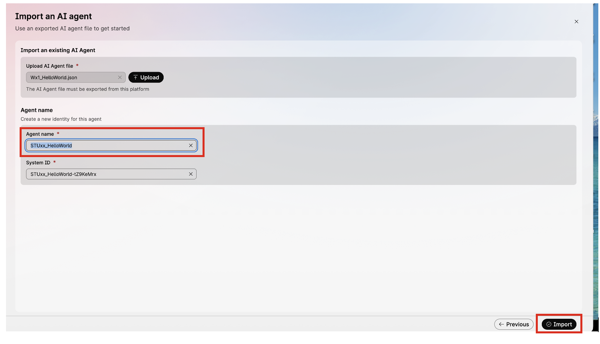
Review AI Agent “Profile”, “Instructions”, “Knowledge”, “Actions”, and “Conversation” Tabs
Click on the Knowledge Tab
Select “Wx1_2026_KB” from the drop-down box
Click “Save Changes”
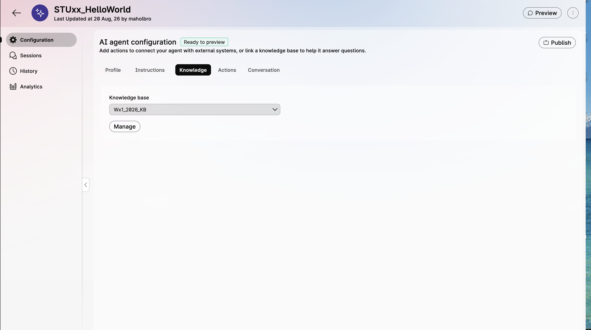
Click “Manage” then “Agree” and review the included types of knowledge base files. When finished, click the
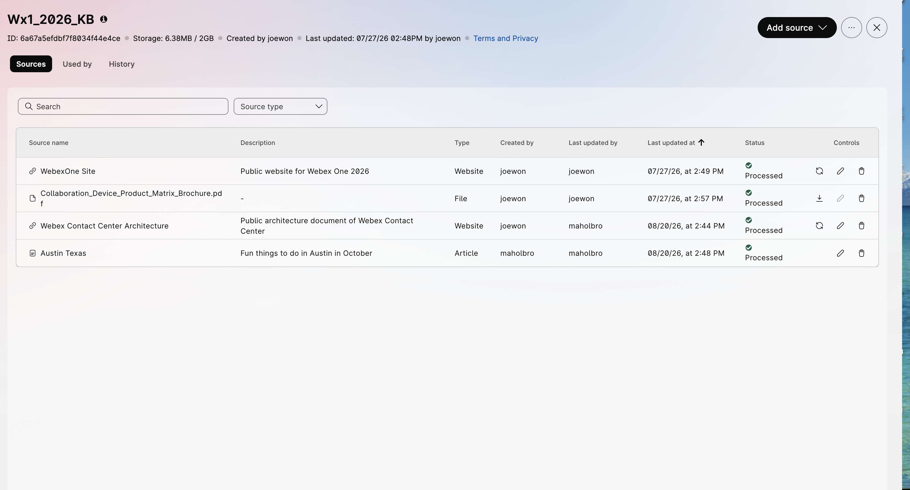
Click Publish
Comment: “First AI Agent”
Click Publish
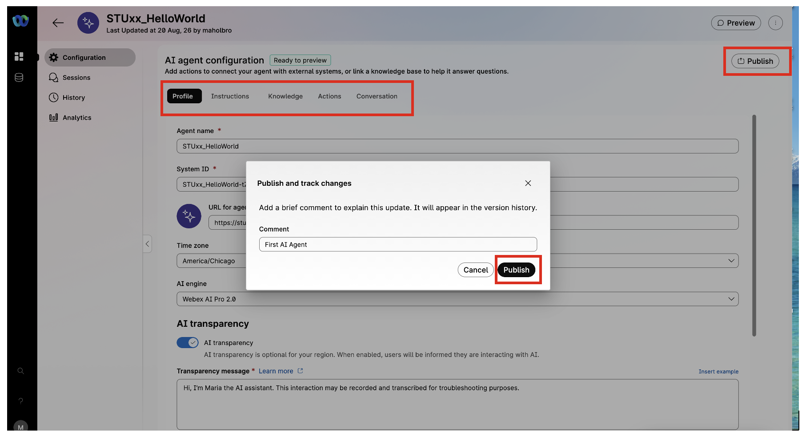
Within Collaboration Control Hub à Contact Center
Click on Flows from the navigation panel
Create a copy of your “STUxx_Lab2” flow
Open the newly created copy “Copy_STUxx_Lab2_......”
Go into Edit Mode and rename the flow to “STUxx_Lab4”, then click Save
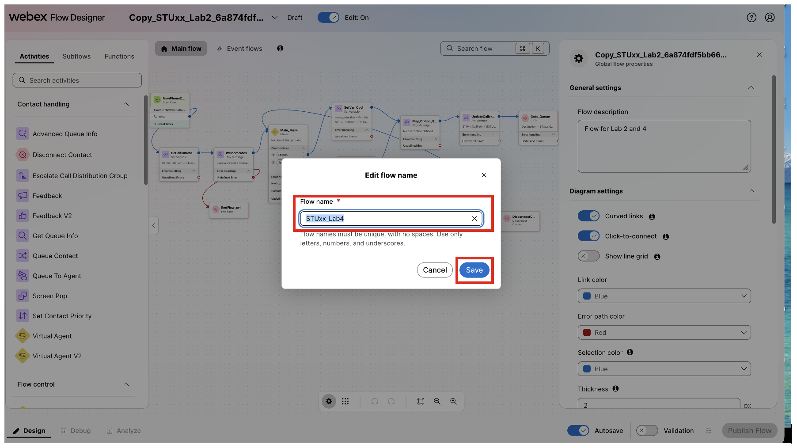
Select the WelcomeMessage node and change the text-to-speech message to say “This is my flow for lab 4”
Disconnect the “WelcomeMessage” node exit path from the Main_Menu node
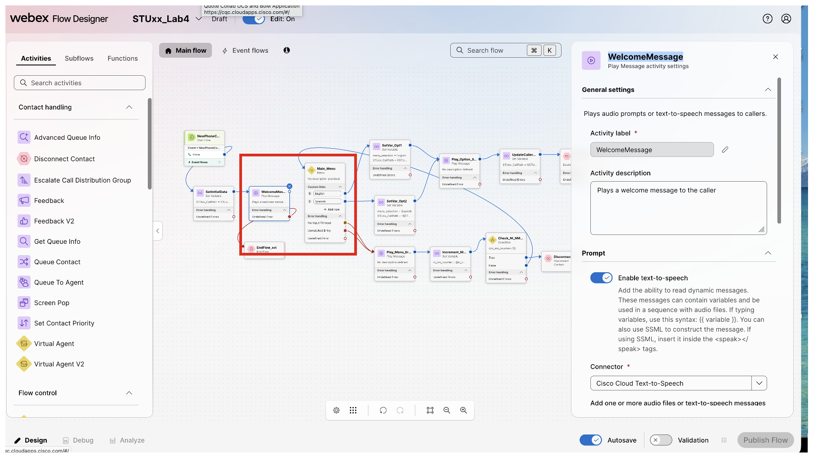
Drag “Percent Allocation” node between the “WelcomeMessage” node and “Main_Menu” node
Connect the welcome message node to the new Percent Allocation node
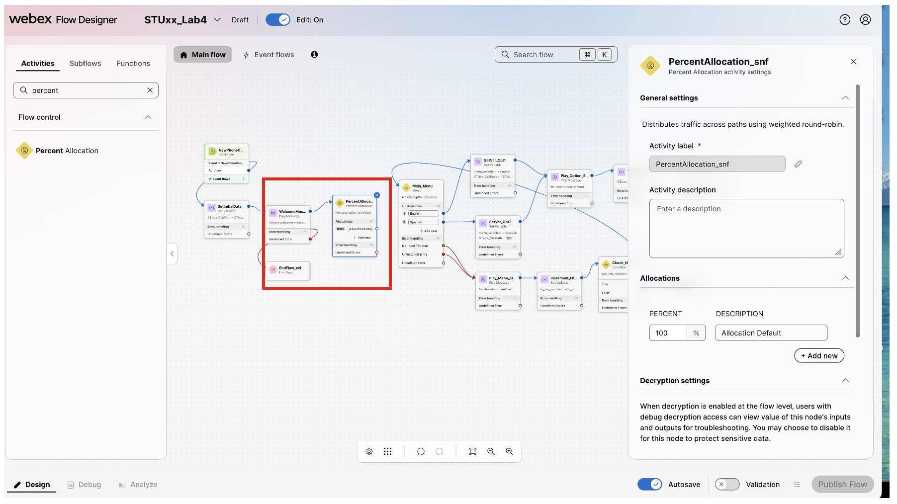
Select the new Percent Allocation node and configure as follows:
Activity Label: “IVR_Divert”
Activity description: Allocate calls between DTMF and AI agent IVR
Rename “Allocation Default” to “DTMF IVR”
Click “+ Add new” button
Rename “New Allocation” to “AI Agent”
Set Percent for IVR to 0 and AI Agent to 100
Select enable decryption
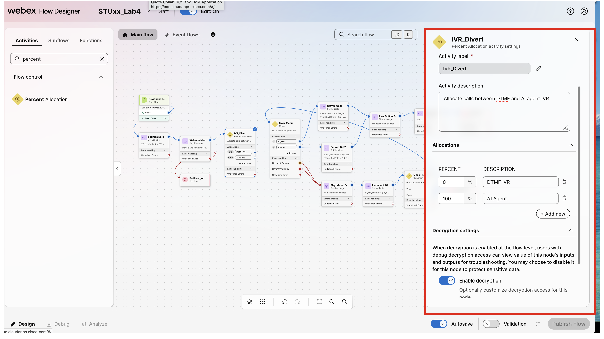
Copy SetVar_Opt2 node and paste it below the IVR_Divert and Main_Menu nodes
Connect IVR_Divert node’s “DTMF IVR” path to MainMenu node
Connect IVR_Divert node’s “AI agent” path to newly-created SetVar node.
Select new SetVar Node
Activity Label: SetVar_Opt3
Note: We will move this to the main menu later
Replace menu_selection Set Value with : “A.I. Agent”
Replace STUxx_CallPath Set Value with: {{STUxx_CallPath}}.aiAgent
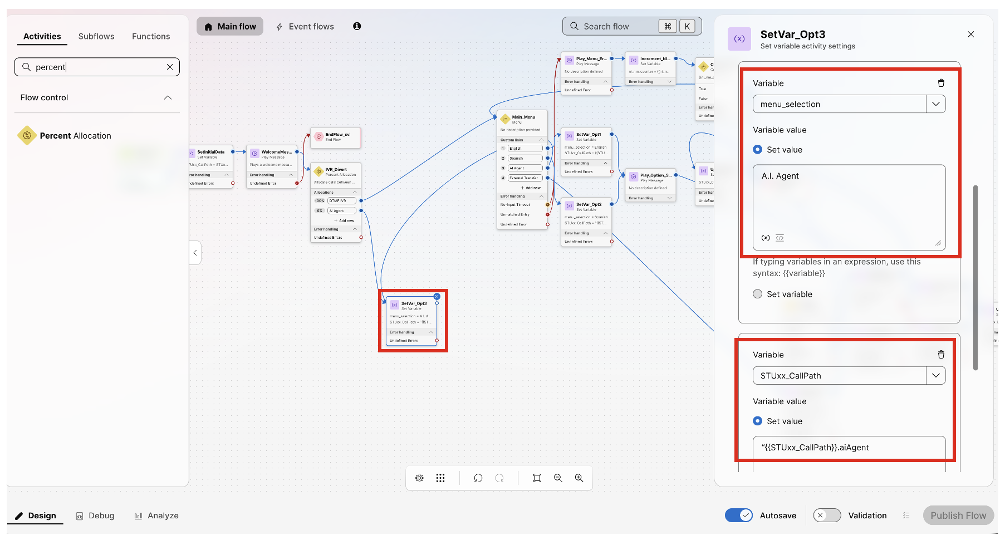
Drag a new Virtual Agent V2 node to canvas
Connect exit of SetVar_Opt3 to new Virtual Agent V2 node
Select Virtual Agent V2 node
Activity label: AI_Agent
Select “Static Contact Center AI Config”
Contact Center AI Config : “Webex AI Agent (Autonomous)” from the Contact Center AI Config pulldown
Virtual agent: Select your recently created virtual agent “STUxx_HelloWorld” from the Virtual agent pulldown
Expand “State Event”
Paste this into the Event data: {'dnis': '{{NewPhoneContact.DNIS}}', 'callerANI':'{{NewPhoneContact.ANI}}'}
Scroll to the bottom to Enable decryption
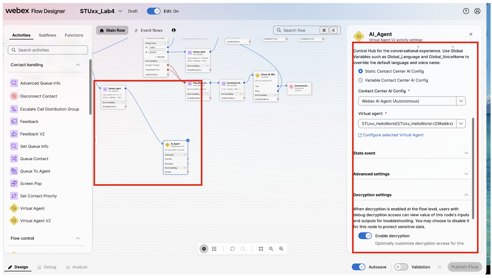
Copy/paste the UpdateCallPath_Queue node
Activity label: UpdateCallPath_Contained
Replace set value to: {{STUxx_CallPath}}.Contained
Connect the AI_Agent node’s “Handled” path to UpdateCallPath_Contained
Connect UpdateCallPath_Contained exit to DisconnectContact node
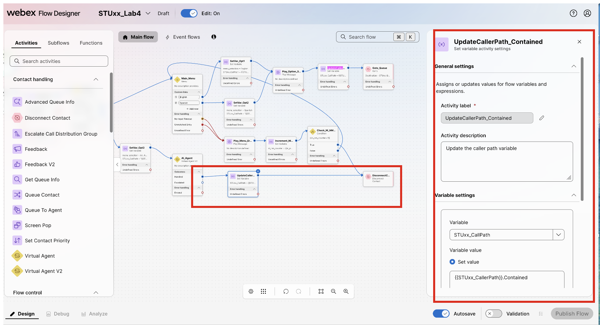
Global Flow Properties 🡪 Configuration 🡪 Flow variables
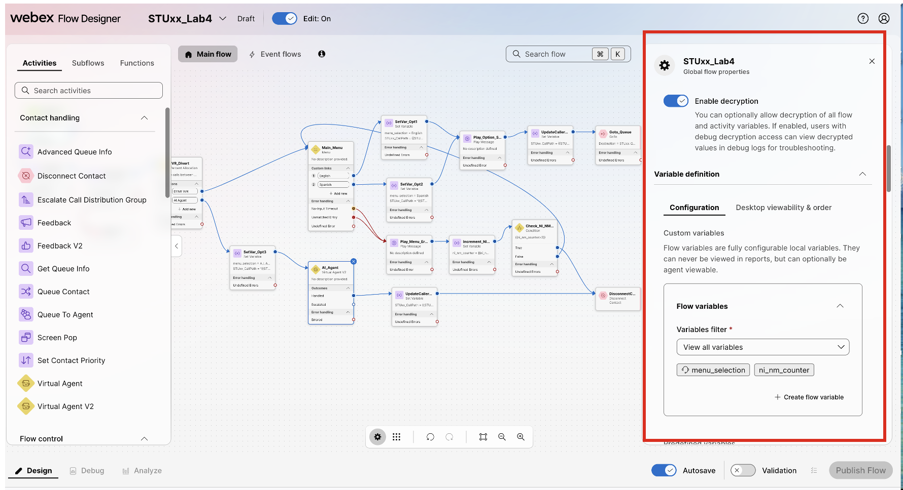
Click ““+ Create flow variable”
Add context flow variables for AI agent escalation
Create 3 variables of Type: String that are agent viewable:
callerFirstName with agent viewable label First Name
callerLastName with agent viewable label Last Name and click “Agent editable”
callerLanguage with agent viewable label Language
Create 1 string variable that is not agent viewable:
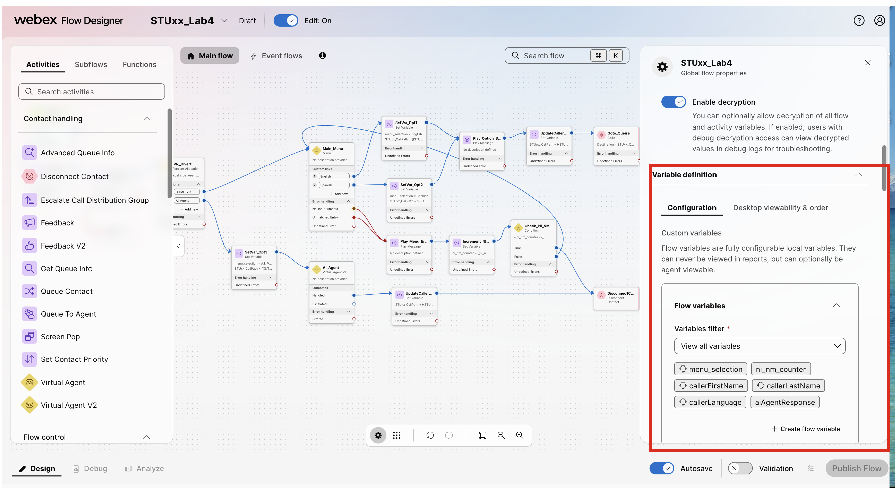
Drag a Set Variable node to canvas below the “UpdateCallPath_Contained” node
Select the new Set Variable node
Activity label: SeeMetaData
Variable: aiAgentResponse
Variable value: {{AI_Agent.MetaData}}
Connect “Escalated” path of the AI_Agent Virtual Agent node to the SeeMetaData Set Variable node
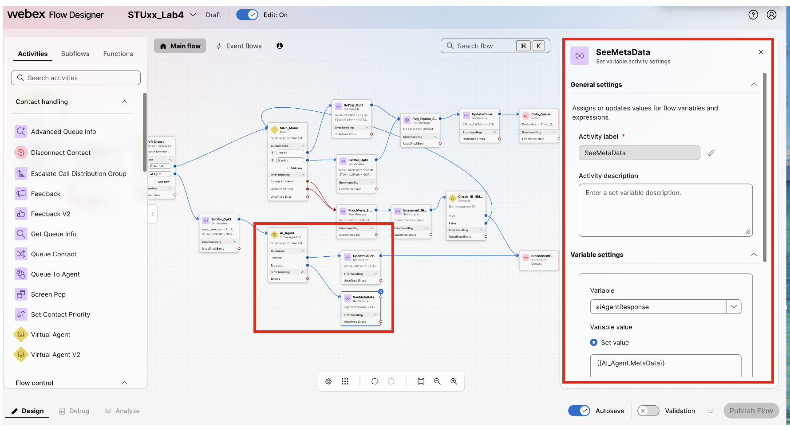
Drag a Parse node to the canvas after the SeeMetaData node
Select the new Parse node
Activity label: Extract_AI_Agent_Data
Input variable: AI_Agent.MetaData
Content type: JSON
Click on “+ Add Parsed variable”
Select “callerFirstName” variable for first Output variable
Path Expression: $.actions.transfer_with_context[0].input.firstName
Click on “+ Add new” button to add another variable to parse
Select “callerLastName” variable for first Output variable
Path Expression: $.actions.transfer_with_context[0].input.lastName
Click on “+ Add new” button to add another variable to parse
Select “callerlanguage” variable for first Output variable
Path Expression: $.actions.transfer_with_context[0].input.language
Connect the SeeMetaData exit path to the new Extract_AI_Agent parse node
Connect the new Extract_AI_Agent parse node to the UpdateCallPath_Queue node (before GoTo_Queue node)
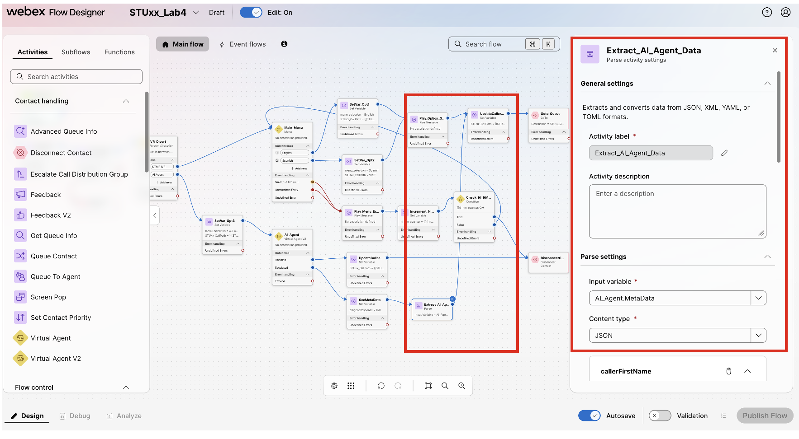
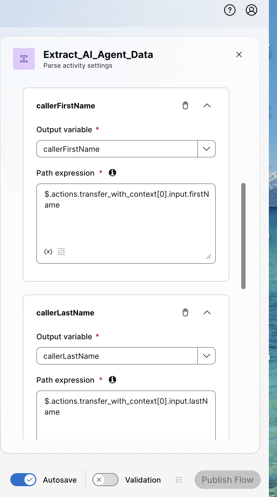
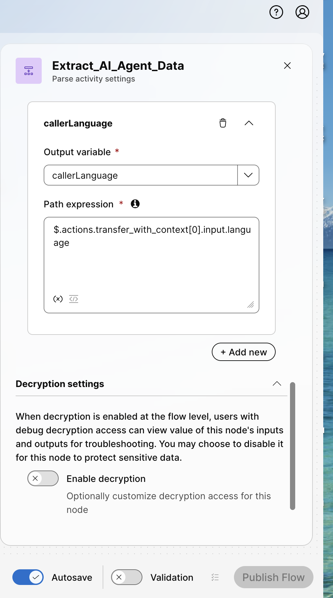
Click on Validation
Publish as Latest
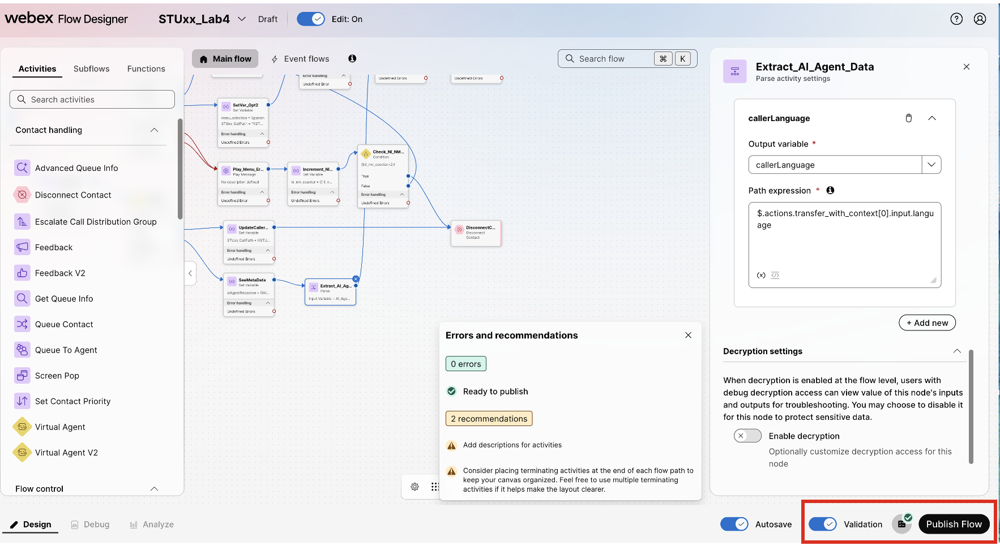
Within Collaboration Control Hub à Contact Center
Click on “Flows” from left navigation panel
Open the “STUxx_Queue_Flow_Lab3” queue flow from Lab3 and Edit
Add flow variables for AI agent escalation
Create 3 string variables that are agent viewable:
callerFirstName with agent viewable label First Name
callerLastName with agent viewable label Last Name and click Agent editable
callerLanguage with agent viewable label Language
Click on Validation
Publish as Latest
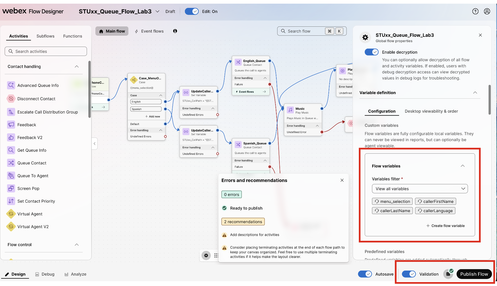
Return to your “STUxx_Lab4” AI agent flow
Refresh the canvas flow (webpage refresh)
Edit flow again
Select Goto_Queue node
Flow variable mapping : Click “+ Add new” button
Select “callerFirstName” under “Map current variable” pulldown
Notice the destination is populated as the name are the same
Add 2 more for “callerLastName” and “callerLanguage”
Click Validation
If Validation fails but you are certain you have the mappings set correctly, refresh the browser and enable Validation again.
Publish flow as latest
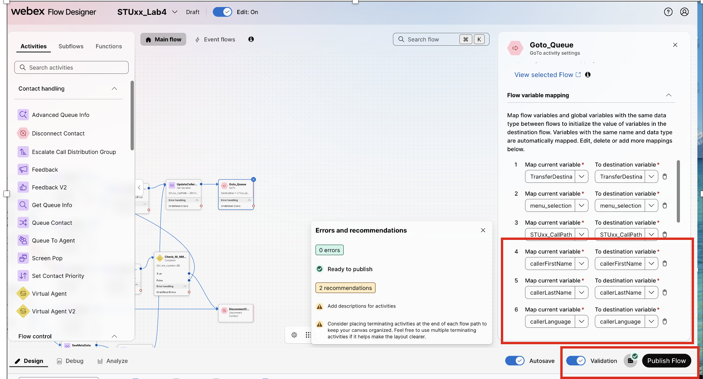
In Control Hub 🡪 Channels rename your Entry point from STUxx_Lab2_EP to STUxx_Lab4_EP
Change your “Routing Flow” dropdown from “STUxx_Lab2” to “STUxx_Lab4”
Set the Music on Hold to defaultmusic_on_hold.wav
Click Save
Test
Use an incognito browser to log in to agent desktop and set yourself as Available
Call the flow. When Megan the AI Agent answers, allow it to add your caller record
Ask it any question around Webex one, Webex Contact Center Architecture, Fun things to do in Austin in October, or Collaboration Devices
Hang up, call the flow back
Observe the lookup successfully identify you this time
Say “habla Espanol?” to the AI agent.
The AI Agent will transfer the call to queue for Spanish support. But since your agent is only skilled for English proficiency, they will not receive the call.
End the call
Finish Lab 4
{kind=link}
{kind=link}
{kind=link}
{kind=link}
{kind=link}
{kind=link}
{kind=link}
{kind=link}
{kind=link}
{kind=link}
{kind=link}
{kind=link}
{kind=link}
{kind=link}
{kind=link}
{kind=link}
{kind=link}
{kind=link}
{kind=link}
{kind=link}
{kind=link}
{kind=link}